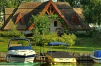
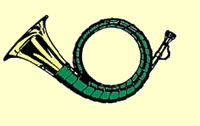
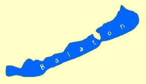
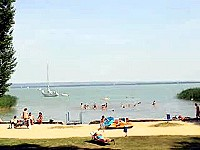
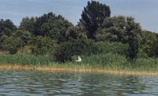
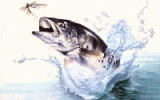
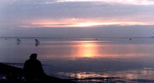
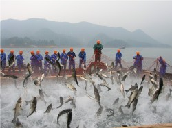
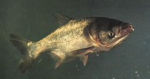
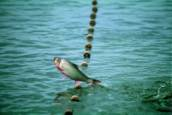

| Angeln
und Jagd in Ungarn |
| |
| |

|
|
|
|
|
|
|
|
|
|
 |
|
|
|
|
| |
|
 |
| |
| |
| |
| |
|
|
| |
|
|
| |
| |
| |
|
|
|
|
| |
| |
|
|
Angelparadies
Balaton bzw.
Plattensee |
|
Von
den Römern "Lacus Pelso" genannt, stammen
sowohl Plattensee, als auch die ungarische Bezeichnung
Balaton ab.
|
|
 |
Die
Umgebung des Balatons ist eine abwechslungsreiche Landschaft. Das
Nordufer grenzt an eine steil emporsteigende Kalkgebirgskette, da wird
der See rasch tiefer. Das Südufer besteht aus einem leicht
hügeligen, sanft herabfallenden Gelände. Hier ist das
Ufergelände seicht und damit ideal für Familien mit
Kleinkindern. |
|
|
Der Plattensee mit seinem fast 200
km langen Seeufer ist landschaftlich sehr abwechslungsreich.
Dank seiner geringen Tiefe (durchschnittlich 3m, die tiefste
Stelle ist 11 m bei Tihany) erw?rmt sich der See im Sommer
rasch. Wassertemperaturen von 27¢XC sind, besonders am Sˆ¢dufer
keine Seltenheit. Somit kann man schon im Mai baden, und
diese Freude zieht sich wegen des sch?nen Sp?tsommers oft bis
in den September. Sommerliche Badetemperaturen gibt es -
Dank globaler Erw?rmung -
auch noch Ende Oktober und sogar Anfang November immer ?fter
in letzter Zeit. |
 |
NATURPARADIES
BALATON
- Es wird vieles für die Erhaltung
der natürlichen Ressourcen am Balaton getan. Motorboote
dürfen schon seit Jahrzehnten nur
noch elektrisch betrieben werden. Darauf freuen sich Surfer, Segler,
Badegäste und die Natur ebenso. Die Badesaison von
Mitte Mai bis Mitte September ist zwar kurz, doch Bala-Bala bietet der
Balaton reichlich im
ganzen Jahr.
Bild
rechts: Silberreiher im Schilfgürtel
zwischen Hafen und Silberstrand. |
 |
GEWÄSSERQUALITÄT
- Im
Balaton schwimmen bekanntlich viele Fische. Nicht
zufällig, denn das Badewasser des Balatons gehört -
im
internationalen Vergleich zu den saubersten seit vielen
Jahren -
nach Angaben der Autoklubs. Das ist ja kein Wunder, denn die Natur
selbst sorgt für
die beste Gewässerreinigung. Das Schilf filtert vor allem
Schwermetalle aus dem Balaton in sich und weil es alle paar Jahre
geerntet und somit aus dem See getragen wird, bleibt das Badewasser
dauernd rein. Der Balaton war einst überall von einem breiten
Schilfgürtel umsäumt. Viel davon musste den insgesamt
80 Kilometer langen Stränden weichen, sehr viel Schilf ist
jedoch bis heute übriggeblieben und wird schon seit vielen
Jahrzehnten
geschützt.
|
Flora und Fauna -
Die
Umgebung des Balatons ist reich an Flora und Fauna. Charakteristische
Bäume sind die Zerreiche, Buchenesche und Esche. Die
unzähligen Kiefer und Fichten gehören nicht hierher,
sie verursachen enorme Gebäudeschäden bei den
gelegentlichen Stürmen. Es gibt hier
rd. 270 Vogelarten, viele davon sind Zugvögel. Die
umliegenden
Wälder sind reich an Rotwild, Schwarzwild, Reh, Fuchs, Dachs,
Fasan, Feldhuhn, Schnepfen. Die edlen
Fische des Sees sind der Fogasch,
der Zander, der Hecht, der Karpfen und die Mülpe.
|
|
ANGLERPARADIES Zum
Bala-Bala gehört nicht nur der Bala-Bala-Wein, die
Thermalbäder oder die
vielen Badestrände. Der sagenhafte Fischreichtum des Balatons
ist weit
über die
Landesgrenzen hinaus bekannt. Im Balaton leben heute mehr als 40
verschiedene Fischarten. Für Angler sind Karpfen, Fogasch und
verschiedene Weißfische eine ersehnte Beute. Damit die
einheimischen und ausländischen
Sportsfreunde nicht enttäuscht werden, setzt man
alljährlich unzählige
Jungfische aus. So ist der Fischbestand immer gesichert. |
 |
|
 |
Die Fische
können
gar nichts dafür, dass sie am Angelhaken landen. Für
sie sind es zu viele
Angler, die auf sie auf den Stegen und Molen rund um den
See warten. Auch wenn
sie eine Ahnung davon bekommen und die Uferregion meiden, eines
Tages landen sie doch in einem Anglerboot. Denn sie
werfen
ihre Angeln aus ihren Booten in
alle Richtungen weit hinaus. Sollte das noch nicht genug
Stress
für die
Fische verursachen und sie zur Aufgabe zwingen, dann gibt es
noch
die
einheimische Fischereiflotte, die aus ihren kleinen und
größeren Booten
Netze
vor die Fischschwärme wirft. |
|
FOGASCH - Ist ein
von den verschiedenen Namen für den Zander, Schill oder
Hechtbarsch. Als
besondere Delikatesse gilt der Fogasch (Bild rechts), eine Unterart des
Zanders, der nur im
Balaton vorkommt. Den kleinen Fogasch nennt man noch Zander, erst
nach seinem ersten Lebensjahr, ab einem Gewicht von 1,5 Kilogramm wird
er zum Fogasch. Diese Bezeichnung deutet auf die wenigen, aber kräftigen Zähne dieses Raubfisches hin, die erst nach dem ersten
Lebensjahr Furcht erwecken und eine Gefahr für den Angler
darstellen. Dünne Gräte
hat der Fogasch keine. Sein
Geschmack ist vergleichbar mit der Forelle. |
 |
Ob
in der vom Paprika feurigen ,
gegrillt oder in einer
Mehlpanade
gebacken, der frisch gefangene
Fogasch schmeckt immer - allerdings erst nach der Zubereitung und nicht
roh.
Aber wer weiß es schon, die Ungarn sind eben keine Liebhaber
von Sushi - noch
lange nicht.
|
AAL - Schon
seit 1966 lebt der Aal im Balaton, aber die Ungarn haben laufende
Sorgen mit ihm. Er wurde zwar eingebürgert, aber
er kränkelt und es dauert bestimmt noch einige Jahrzehnte, bis
man diesen Fisch dort in den Griff
bekommt - wenn überhaupt. Der Aal aus dem Balaton fehlt
daher auf allen Speisekarten rund um den Balaton. Wer nur den
geräucherten Aal vom Nordsee kennt - vielleicht vom Hamburger
Fischmarkt - oder den von Gourmetköchen gekochten Aal, der
sollte ihn einmal auf ungarische Art probieren und in einer Panade aus Paprika
und Mehl braten.
|
|
GRASKARPFEN
- Bekanntlich
gibt es überall viele Sorgen mit der Einbürgerung
fremdländischer Arten - so
hat man im Balaton das Problem auch mit diesem Fisch. Aus der fernen
Amur hatte man den schilffressenden großköpfigen
Karpfen, auch Amurkarpfen genannt (Busa auf Ungarisch), als der
Naturschutz noch weit
hinter Sichel, Hammer und rotem Stern hinkte. Der Graskarpfen
wächst rascher heran und wird größer, als
in ihrer asiatischen Heimat, vermehrt sich aber unter
mitteleuropäischem Klima überhaupt nicht. Der Fang
und natürliche Auslese wird im Labor massenhaft
nachgezüchtet. Wie man den Graskarpfen in seiner Heimat in der Amur f?ngt,
zeigt das Bild rechts - so geht man im Herbst auch im Balaton
vor. In China ist der Fang mittlerweile zu einer touristischen
Attraktion geworden. |
 |
|
Der
Jahresfang hat sich seit der Einbˆ¢rgerung stabilisiert und
betrug 232 Tonnen im Jahre 2005. |
| |
|
 |
Der MARMORKARPFEN
(links, bis zu 120 cm/38 kg, klicke auf das Bild) und der SILBERKARPFEN
(rechts) wurden aus fernöstlichen Gewässern
eingebürgert. Die Ungarn nennen sie
(sprich: Buscha). |
 |
Die
karpfenartigen Neubürger sind Pflanzenfresser und
müssen im Labor laufend
nachgezüchtet
werden, weil es
mit der
Vermehrung im Balaton aus bisher unbekannten Gründen nicht
klappt. Die
eingebürgerten Karpfen aus dem Fernost sind in
erster
Linie Bakterien- und Algenfresser, was der
Gewässerqualität zugute
kommt. Alle
drei eingebürgerten Karpfen sind zum
Wirtschaftsfaktor geworden,
ihr Anteil am Gesamtfang der Fischereiflotte beträgt
beinahe
20%. Es ist eine ökologische Aufgabe der Fischereiflotte,
einen
Ausgleich unter Fangmenge, Nachzucht und Pflanzenfraß zu
realisieren.
|
Für
Sportangler sind die drei aus Asien
eingebürgerten Karpfenarten freigegeben, die
Mindestfanggröße beträgt 40 Zentimeter. Sie
sind in diesem Stadium eine Delikatesse in den Fischrestaurants um
den Balaton herum - geräuchert auf kalter Platte oder paniert
und gebraten. Genannt sei noch die Tatsache, dass diese drei
Fischarten in der Tat keine Karpfenfische sind, sie zählen zur
Gruppe der Weißfische. Die deutsche Namensgebung als Karpfen
rührt von der äußeren Ähnlichkeit
und der mit unseren Karpfenarten vergleichbaren
Ernährungsweise.
|
In
Siófok befindet
sich die Zentrale der
Balaton-Fischereiflotte.
Dort haben Sie die Qual der Wahl unter frisch eingefrorenen oder noch
quick
lebendigen Fischen, falls Sie die Delikatesse für den Mittag-
oder
Abendtisch
nicht selbst fangen und die Zeit lieber für andere
Aktivitäten nutzen
wollen - oder vor Freunden und Familie gl?nzen wollen.
|
| |
| |
Ungarn-Tourist Team

|
| |
| |
|
|


 Sie wollen endlich einmal
zum Plattensee, der von den
Ungarn oft "ungarisches Meer" oder einfach nur Balaton genannt wird?
Sie wollen endlich einmal
zum Plattensee, der von den
Ungarn oft "ungarisches Meer" oder einfach nur Balaton genannt wird?